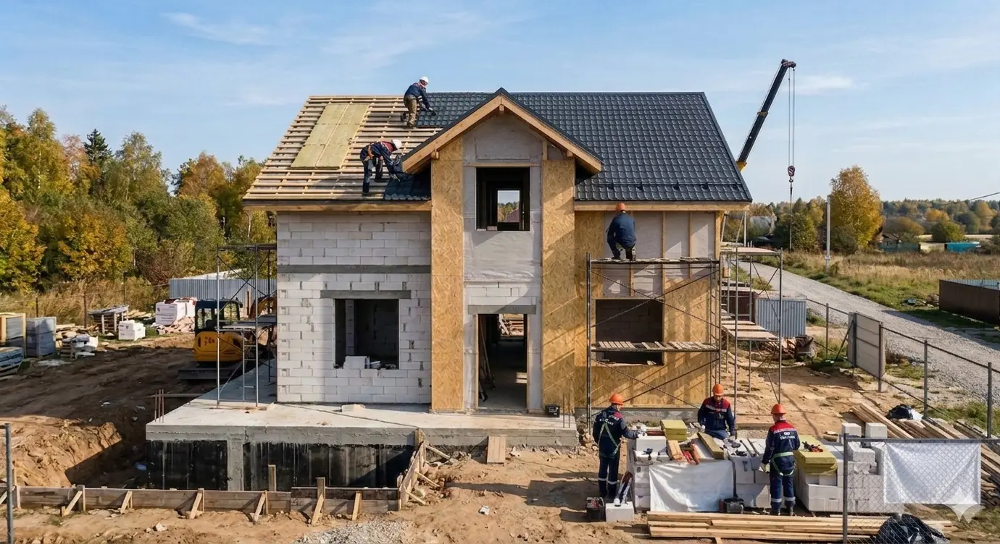
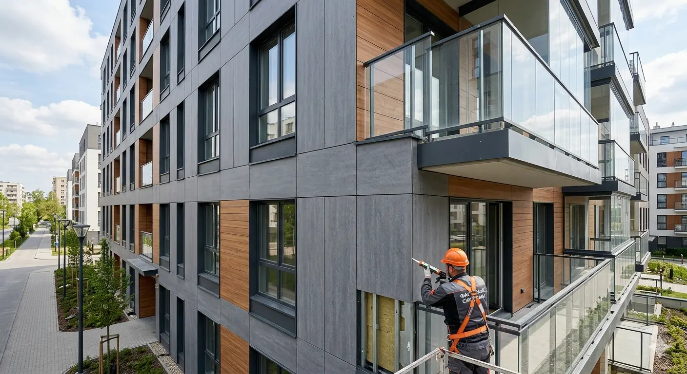
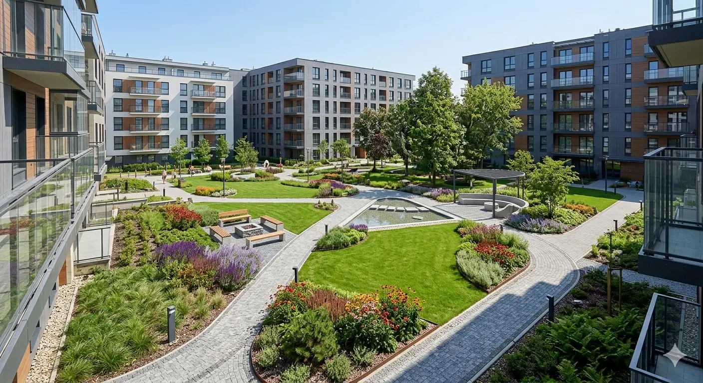
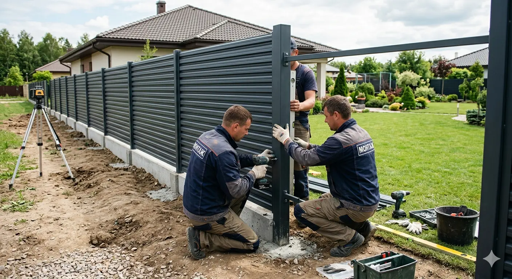
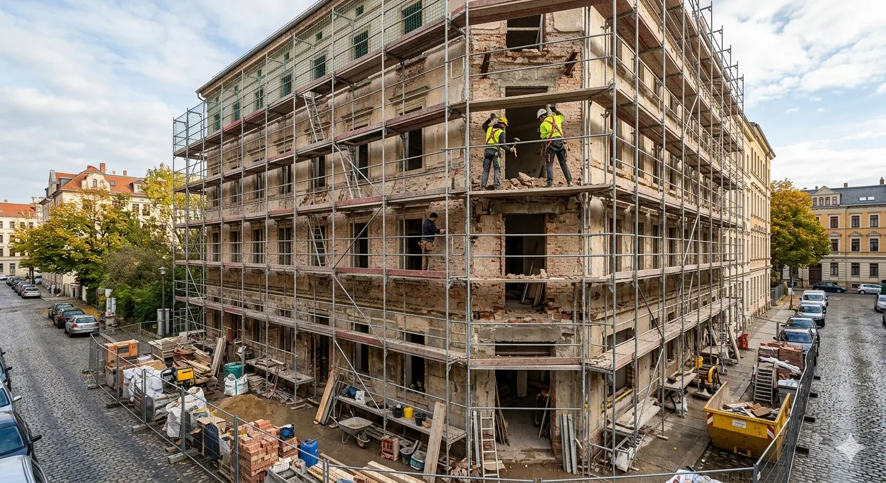
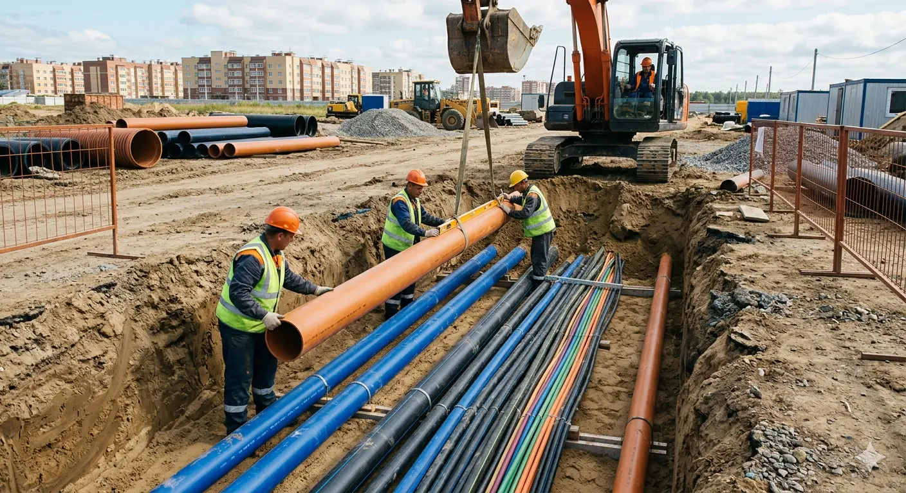

Строительство частного дома
Полный цикл работ: фундамент, стены, кровля и подготовка под чистовую отделку.
Примеры выполненных работ: от строительства и ремонта до благоустройства и инженерных систем.

Полный цикл работ: фундамент, стены, кровля и подготовка под чистовую отделку.

Утепление и монтаж фасадных панелей с аккуратными узлами и герметичностью.

Дорожки, газон и посадки для ухоженного участка с гармоничным цветовым решением.

Установка столбов, выравнивание секций и надежный крепеж для долгой службы.

Ремонт фасада и подготовка к обновлению отделки: леса, демонтаж и восстановление.

Монтаж труб, кабелей и элементов инженерной инфраструктуры с соблюдением уклонов.